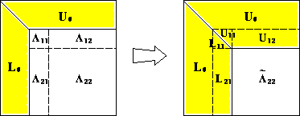

LU Decomposition
LU decomposition
LU decomposition is effectively Gaussian Elimination; it records the operations and the result of such operations into two triangular matrices, \(\mathbf{A} = \mathbf{L}\mathbf{U}\).
- Uncommon in statistics because most of the time statisticians deal with positive (semi)definite matrices.
- Applies generally to arbitrary matrices, though factors are only “almost” triangular.
- History: Chinese mathematical text The Nine Chapters on the Mathematical Art, Issac Newton and Carl Friedrich Gauss.
- A toy example illustrating GE.
Elementary operator matrix
An elementary operator matrix is the identity matrix with the 0 in position \((j,k)\) replaced by \(c\) \[ \mathbf{E}_{jk}(c) = \begin{pmatrix} 1 & & \\ & \ddots & \\ & & 1 & \\ & & & \ddots & \\ & & c & & 1 & \\ & & & & & \ddots \\ & & & & & & 1 \end{pmatrix} = \mathbf{I} + c \mathbf{e}_j \mathbf{e}_k^T. \]
Closely related to Householder transformation. Reminder that here \(\mathbf{e}_{j}\) is the \(j\)-th standard basis vector in \(\mathbf{R}^{d}\), which has all 0s except in the \(j\)-th place.
Each \(\mathbf{E}_{jk}(c)\) is unit triangular, full rank, and its inverse is
\[ \mathbf{E}_{jk}^{-1}(c) = \mathbf{E}_{jk}(-c). \]
\(\mathbf{E}_{jk}(c)\) left-multiplies an \(n \times m\) matrix \(\mathbf{X}\) effectively replace its \(j\)-th row \(\mathbf{x}_{j\cdot}\) by \(c \mathbf{x}_{k \cdot} + \mathbf{x}_{j \cdot}\)
\[ \mathbf{E}_{jk}(c) \times \mathbf{X} = \mathbf{E}_{jk}(c) \times \begin{pmatrix} & & \\ \cdots & \mathbf{x}_{k\cdot} & \cdots \\ & & \\ \cdots & \mathbf{x}_{j\cdot} & \cdots \\ & & \end{pmatrix} = \begin{pmatrix} & & \\ \cdots & \mathbf{x}_{k\cdot} & \cdots \\ & & \\ \cdots & c \mathbf{x}_{k\cdot} + \mathbf{x}_{j\cdot} & \cdots \\ & & \end{pmatrix}. \]
All for the low cost of \(2m\) flops.
Gaussian elimination applies a sequence of elementary operator matrices to transform the linear system \(\mathbf{A} \mathbf{x} = \mathbf{b}\) to an upper triangular system
\[\begin{eqnarray*} \mathbf{E}_{n,n-1}(c_{n,n-1}) \cdots \mathbf{E}_{21}(c_{21}) \mathbf{A} \mathbf{x} &=& \mathbf{E}_{n,n-1}(c_{n,n-1}) \cdots \mathbf{E}_{21}(c_{21}) \mathbf{b} \\ \mathbf{U} \mathbf{x} &=& \mathbf{b}_{\text{new}}. \end{eqnarray*}\]
Gaussian transformation
For the first column, we apply several elementary operator matrices on the left: \[ \mathbf{M}_1 = \mathbf{E}_{n1}(c_{n1}) \cdots \mathbf{E}_{31}(c_{31}) \mathbf{E}_{21}(c_{21}) = \begin{pmatrix} 1 & \\ c_{21} & \\ & \ddots & \\ c_{n1} & & 1 \end{pmatrix} \]
For the \(k\)-th column, we do the same: \[ \mathbf{M}_k = \mathbf{E}_{nk}(c_{nk}) \cdots \mathbf{E}_{k+1,k}(c_{k+1,k}) = \begin{pmatrix} 1 & \\ & \ddots \\ & & 1 & \\ & & c_{k+1,k} & 1\\ & & \vdots & & \ddots \\ & & c_{n,k} & & & 1 \end{pmatrix}. \]
The \(\mathbf{M}_1, \ldots, \mathbf{M}_{n-1}\) matrices are called Gauss transformations. Gaussian elimination does \[
\mathbf{M}_{n-1} \cdots \mathbf{M}_1 \mathbf{A} = \mathbf{U}.
\]
Let \[\begin{equation*}
\mathbf{L} = \mathbf{M}_1^{-1} \cdots \mathbf{M}_{n-1}^{-1} = \begin{pmatrix}
1 & & & & \\
\,- c_{21} & \ddots & & & \\
& & 1 & & \\
\, - c_{k+1,1} & & - c_{k+1,k} & & \\
& & \vdots & & \ddots \\
\,- c_{n1} & & - c_{nk} & & & 1
\end{pmatrix}.
\end{equation*}\] Thus we have the LU decomposition \[
\mathbf{A} = \mathbf{L} \mathbf{U},
\]
where \(\mathbf{L}\) is unit lower triangular and \(\mathbf{U}\) is upper triangular.

Complexity
- The total cost to compute factors is \(\frac{2}{3} n^{3}\) flops for square systems.
- Solving with LU is the cost of two triangular solves: \(2n^{2}\).
Matrix inversion
- Solve \(\mathbf{A} \mathbf{X} = \mathbf{I}\), or \(\mathbf{A} \mathbf{x}_{i} = \mathbf{e}_{i}\).
- Exploiting 0s in RHS reduces complexity of each solve, changing cost of triangular solves from \(2n^{3} to \frac{4}{3}n^{3}\).
- Cost to invert with Gaussian elimination: \(2n^{3}\) flops, which is 3 times more expensive than just solving with LU!
- Need standard errors, and you’re convinced it can’t be done any other way (it can).
- Number of RHSs is much greater than \(n\) (multivariate regression, \(AX = B\)).
- \(n\) is small, and you use StaticArrays.jl to do so blazingly fast.